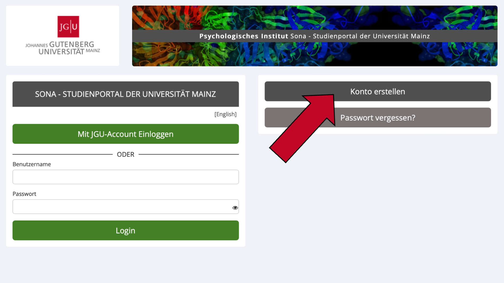
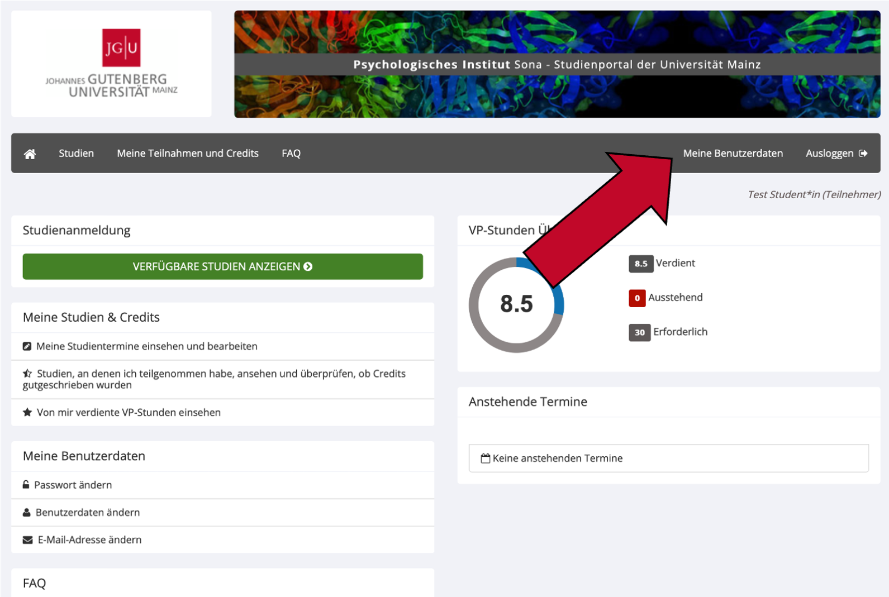

2 Erste Schritte
2.1 Wie erstelle ich einen Account als Student*in der JGU?
- Besuchen Sie Sona unter folgendem Link: https://uni-mainz-jgu.sona-systems.com.
- Klicken Sie auf
Mit JGU-Account Einloggen.
- Sie werden nun auf eine Seite der Uni Mainz weitergeleitet. Geben Sie dort bitte Ihren JGU-Benutzernamen (der Teil Ihrer JGU E-Mail-Adresse vor dem “@”) und das dazugehörige Passwort ein.
- Akzeptieren Sie auf der nächsten Seite die Informationsweitergabe an Sona. Sie können ganz unten die Dauer festlegen, für die Ihre Entscheidung zur Informationsweitergabe gültig sein soll.
- Auf der nächsten Seite müssen Sie einige Angaben zu Ihrem Account vervollständigen. Geben Sie unter
Student ID Numberbitte Ihre Matrikelnummer an, außerdem Ihr Geburtsdatum, Ihre Handynummer (Wofür soll ich meine Handynummer angeben?) und Ihren Studiengang an der Universität Mainz. - Bestätigen Sie Ihre Eingaben, indem Sie auf
Request Accountklicken. - Nun können Sie sich jederzeit auf der Startseite von Sona mit Ihrem JGU Account anmelden, indem Sie auf
Mit JGU-Account Einloggenklicken. - Bei Ihrer ersten Anmeldung müssen Sie die Datenschutzrichtlinien von Sona akzeptieren. Zudem können Sie an einer kurzen Prescreening Befragung teilnehmen, damit Ihnen passgenaue Studien angezeigt und solche Studien ausgeblendet werden, an denen Sie aus formalen Gründen (z.B. aufgrund Ihres Studienfachs) nicht teilnehmen können.
2.2 Wie erstelle ich einen Account bei Sona, wenn ich nicht Student*in der JGU bin?
- Besuchen Sie Sona unter folgendem Link: https://uni-mainz-jgu.sona-systems.com.
- Klicken Sie nun in der rechten Spalte auf den Knopf
Konto erstellen.

- Auf der folgenden Seite finden Sie links eine Anleitung und rechts eine Spalte, in der Sie Ihre Nutzerdaten eintragen können. Welchen Benutzernamen Sie wählen, ist egal, da Sie diesen lediglich für die Anmeldung auf der Website benötigen. Der Benutzername und die E-Mail-Adresse dürfen noch nicht im System vorhanden sein.
- Nach der Eingabe Ihrer Daten wird Ihnen ein vorläufiges Systempasswort per E-Mail zugesendet, das Sie nach Ihrer ersten Anmeldung in Sona ändern können. Diese E-Mail wird innerhalb weniger Minuten versandt. Bitte schauen Sie in ihrem Spam-Ordner nach, falls Sie die E-Mail nicht in Kürze erhalten.
- Bei Ihrer ersten Anmeldung müssen Sie die Datenschutzrichtlinien von Sona akzeptieren. Zudem können Sie an einer kurzen Prescreening Befragung teilnehmen, damit Ihnen passgenaue Studien angezeigt und solche Studien ausgeblendet werden, an denen Sie aus formalen Gründen (z.B. aufgrund Ihrer Eignung für bestimmte Laboruntersuchungen) nicht teilnehmen können.
2.3 Wofür soll ich meine Handynummer angeben?
Zunächst einmal: Die Angabe der Handynummer bei Sona ist nicht verpflichtend. Wir würden es jedoch empfehlen, damit der*die Forscher*in Sie in Notfällen kontaktieren kann. Erstens kann dies der Fall sein, wenn Sie sich für eine Laborstudie angemeldet haben, sich aber verspäten oder den Raum nicht finden. Der*Die Forscher*in könnte Sie in diesem Fall anrufen, um sich mit Ihnen zu koordinieren. Zweitens könnte der*die Forscher*in Sie kontaktieren, falls Ihr Termin für eine Laborstudie sehr kurzfristig abgesagt werden muss. Ihre Handynummer wird ausschließlich für solche oder ähnliche Zwecke verwendet, wenn Sie sich für eine Laborstudie angemeldet haben. Ihre Handynummer wird nicht an Dritte weitergegeben oder dazu verwendet, Ihnen Werbung für neue Studien oder Erinnerungen zu schicken.
2.4 Wie ändere ich die Sprache auf der Website?
Sona Systems der Uni Mainz ist in Deutsch und in Englisch verfügbar. Die Auswahl der Sprache geschieht im Login-Fenster.
- Besuchen Sie die Website https://uni-mainz-jgu.sona-systems.com oder, falls Sie bereits angemeldet sind, loggen Sie sich aus (in der Menüleiste oben rechts auf
Ausloggenklicken). - Bevor Sie Ihren Benutzernamen eingeben, können Sie die Sprache anhand des kleinen Knopfes über
Benutzernamein den eckigen Klammern ändern.

- Wenn Sie
[English]sehen, wird Ihnen die Website gerade auf Deutsch angezeigt. Sie können auf[English]klicken, um die Website auf Englisch zu stellen. Wenn Sie[Deutsch]sehen, wird Ihnen die Website gerade auf Englisch angezeigt. Sie können auf[Deutsch]klicken, um die Website auf Deutsch zu stellen. - Nachdem Sie die Website auf Ihre präferierte Sprache umgestellt haben, können Sie sich wie gewohnt mit Ihren Benutzerdaten einloggen.
2.5 Wie ändere ich Daten in meinem Account?
Ihre E-Mail-Adresse, Ihre Telefonnummer, Ihr Passwort sowie Ihre E-Mail-Einstellungen können Sie selbst in Sona ändern:
- Loggen Sie sich mit Ihrem Account unter https://uni-mainz-jgu.sona-systems.com ein.
- Klicken Sie im oben im Menü auf
Meine Benutzerdaten.

- Ändern Sie Ihre Daten in den betreffenden Feldern.
- Bestätigen Sie Ihre Eingabe, indem Sie den grünen Knopf
Aktualisierenganz unten auf der Seite klicken.
Ihren (Benutzer-) Namen, Ihr Geburtsdatum sowie Ihre Student-ID (Matrikelnummer) können Sie nicht eigenständig ändern. Der genaue Wortlaut Ihres Benutzernamens ist nicht wichtig, da Sie diesen lediglich für den Login für die Website benötigen. Haben Sie allerdings einen Fehler bei der Eingabe Ihres Namens, Geburtsdatums oder Ihrer Student-ID (Matrikelnummer) gemacht, schreiben Sie bitte eine E-Mail an die Administration unter sona@uni-mainz.de, um die Daten ändern zu lassen.